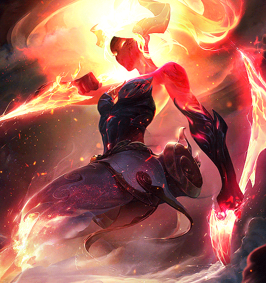

El Terror de los Petes
ElPesi
Pesi, no es solo el Top... es EL TOP. ¿Necesitas early? no pasa nada te saca Trundle, ¿Necesitas Late? Pero despreocupate, te saca Mordekaiser o Nasus. ¿Y si no hay asesinos? Ahi esta su mejor opcion Akali. Experto en devastar la vida de los ADC, ElPesi utiliza toda su habilidad para sacarlos del juego.
